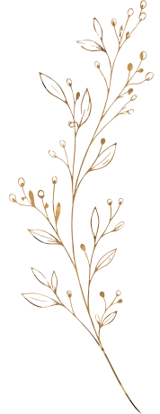
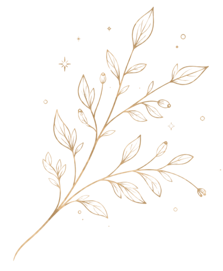
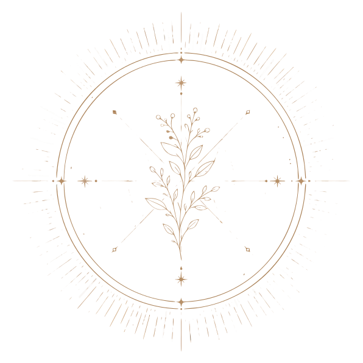
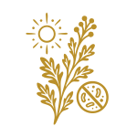
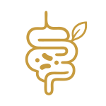
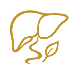

Помните, как выглядело утро, когда ещё не нужен был кофе, чтобы включиться?Вот об этом — всё это пространство «Ведание».


Я 13 лет наблюдаю одну и ту же картину.
Приходит женщина. Говорит: «Со мной что-то не так, но все анализы в норме». Врач разводит руками. Знакомо?
А потом мы начинаем копать — и оказывается, что тело годами тащит на себе то, что никто вслух не называет: паразитов, перегруженную печень, гормональный хаос, токсическую нагрузку из еды и воды, которые давно стали нормой.
Вам кто-то говорил, что тяжесть после еды — это не «просто так»?
Что тревога фоном — это не характер?
Что кожа, которая перестала сиять, — не про крем?
Это говорит с вами о необходимости регулярной поддержки. Уже давно.

Твоё тело помнит другое состояние.

Когда голова была ясной без кофе
Когда просыпалась — и уже была энергия
Когда кожа, либидо, настроение не требовали усилий
Это не молодость которая прошла. Это ресурс который забирает среда — питание, токсины, стресс, гормональный сбой, то что живёт в теле и о чём никто не говорит вслух.
Тело сигналит. Ты интерпретируешь это как возраст. И продолжаешь терпеть.


Наташа Сведовая
Сертифицированный нутрициолог, натуропат, остеопракт, телесно-ориентированный терапевт, практик йогатерапии и гипнотерапии. Специалист по детоксу и природному питанию.
12 лет в природном оздоровлении. 20 000 учеников по всему миру.
Основатель школы Urban Queen, бренда натуральных продуктов Priroda и ретрит-центра Shivari в Таиланде.
Автор уникальных методик восстановления здоровья для женщин, мужчин и детей.

САМОДИАГНОСТИКА
Узнай себя:
0 из 6
Три и больше — ты пришла по адресу

Что такое «ВЕДАНИЕ»?
Не клуб по интересам. Не библиотека контента, a cистема в которой каждый месяц ты делаешь одно конкретное действие для тела — и чувствуешь разницу. Без хаоса. Без “попробуй всё сразу”. Один месяц — один слой. Через год — другое тело.

Внутри пространства «ВЕДАНИЕ»
Очищение
То, что живёт в теле и забирает энергию, гормоны и ясность. Антипаразитарные протоколы, которые работают.

Питание и ресурс
Не диета, а понимание, что именно кормит тело, а что его опустошает и забирает силы.
Женская сила
Чувствительность, либидо и магнетизм. Это физиология, а не эзотерика.
Нервная система
Йога, дыхание и работа со стрессом. Не просто для расслабления, а для восстановления.
Сообщество
Люди, которые идут туда же. Кураторы, которые отвечают. Не одна.


В «Ведании» вы не просто получаете доступ к материалам. Каждый месяц в клубе проходит отдельный курс с фокусом на конкретное восстановление тела.

«Летнее Антипаразитарное очищение»

«Микробиом и кишечник»

«Очищение
печени»
Вступаете один раз — и идете по программе месяца вместе с сообществом.
Пространство для тех, кто больше не хочет жить в режиме внутреннего истощения
Большинство людей сегодня пытаются восстановить себя хаотично. Случайные практики. Случайные советы. Случайные протоколы. Но настоящее восстановление должно быть системным.